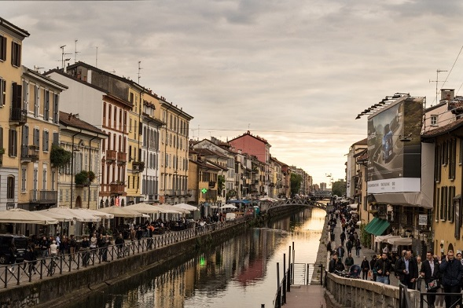
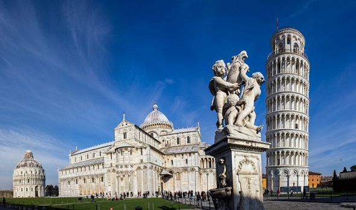
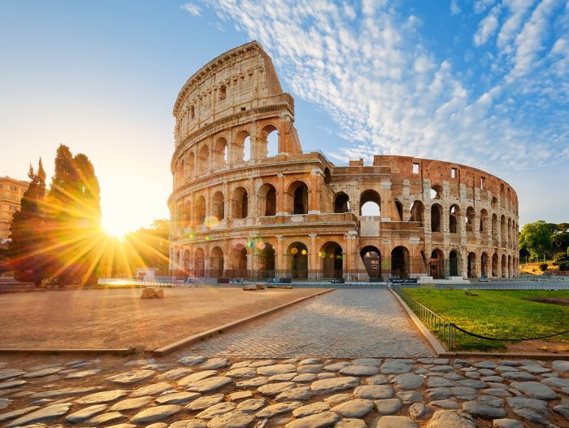
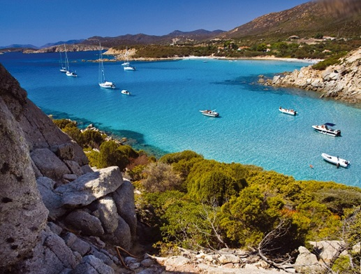
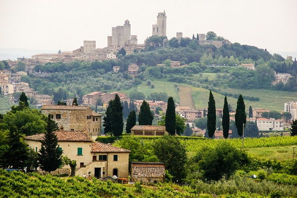
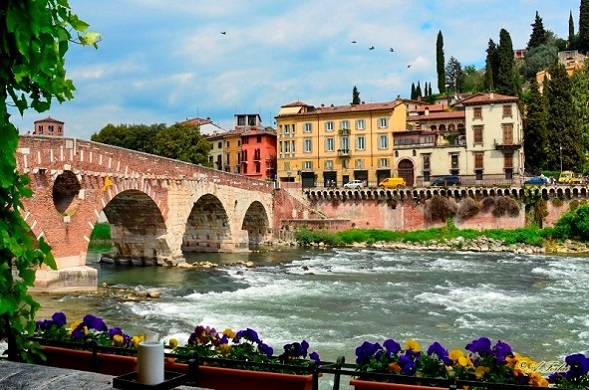

Lugares de Italia |
|
Descubre los lugares más emblemáticos de Italia: Ciudades llenas de historia, arte y paisajes de ensueño |
|
Milan |
|
|  | Milán, situada en el norte de Italia, es una ciudad que combina historia, arte y modernidad, siendo un importante centro financiero, cultural y de la moda. Conocida por su elegancia y dinamismo, es un destino clave tanto para amantes de la cultura como para quienes buscan innovación y estilo. Entre sus principales atractivos destaca el imponente Duomo de Milán, una de las catedrales góticas más grandes del mundo, junto con la Galleria Vittorio Emanuele II, un lujoso centro comercial histórico. La ciudad también alberga el famoso Teatro alla Scala uno de los teatros de ópera más prestigiosos del mundo, y la icónica obra La Última Cena de Leonardo da Vinci, ubicada en el convento de Santa Maria |
Pisa |
|
Pisa, ubicada en la región de la Toscana, es mundialmente conocida por su icónica Torre Inclinada, parte del conjunto monumental de la Piazza dei Miracoli, que también incluye la Catedral, el Baptisterio y el Camposanto. Esta ciudad no solo destaca por su impresionante arquitectura medieval, sino también por su vibrante ambiente cultural, impulsado por la Universidad de Pisa, una de las más antiguas y prestigiosas de Italia. Además de su riqueza histórica, Pisa ofrece calles encantadoras, museos y una animada vida estudiantil. Su ubicación estratégica la convierte en un excelente punto de partida para explorar otras joyas toscanas como Florencia, Lucca y Siena. |
 |
Roma |
|
 |
Roma, la capital de Italia, es una de las ciudades más emblemáticas del mundo, con una historia que abarca más de 2,500 años. Conocida como "La Ciudad Eterna", fue el corazón del Imperio Romano y cuna de una enorme herencia cultural, artística y arquitectónica. Entre sus monumentos más famosos destaca el Coliseo, Construido entre los años 70 y 80 d.C. bajo el mandato de los emperadores Vespasiano y Tito, este majestuoso anfiteatro podía albergar hasta 50,000 espectadores. Diseñado para albergar espectáculos de gladiadores, cacerías de animales y recreaciones de batallas, el Coliseo era el centro del entretenimiento en la antigua Roma.
|
Cerdeña |
|
Cerdeña, la segunda isla más grande del Mediterráneo, es un destino único que combina playas espectaculares, historia milenaria y una cultura auténtica. Conocida por su costa de aguas cristalinas y arena blanca, lugares como la Costa Esmeralda, el archipiélago de La Maddalena y Cala Goloritzé la convierten en un paraíso para los amantes del mar. Además, su interior montañoso ofrece paisajes naturales impresionantes ideales para el senderismo y la exploración. La isla posee una herencia histórica fascinante, destacando los nuraghi, antiguas construcciones de piedra de la civilización nurágica, que datan de hace más de 3,000 años. |
 |
La Toscana |
|
 |
Florencia, su capital, es la cuna del Renacimiento y alberga algunos de los tesoros artísticos más importantes del mundo, como la Catedral de Santa María del Fiore, la Galería Uffizi y la escultura del David de Miguel Ángel |
Verona |
|
Verona, ubicada en el norte de Italia, es una ciudad con una rica historia, arquitectura impresionante y un ambiente romántico único. Conocida mundialmente por ser el escenario de Romeo y Julieta de Shakespeare, atrae a miles de visitantes que buscan descubrir la famosa Casa de Julieta y su icónico balcón. Más allá de su conexión con la literatura, Verona es una ciudad con un patrimonio cultural excepcional. Su monumento más destacado es la Arena de Verona, un antiguo anfiteatro romano del siglo I d.C. que sigue en uso hoy en día para conciertos y la prestigiosa temporada de ópera |
 |
| Todos los derechos reservados Valeria 2025© | |